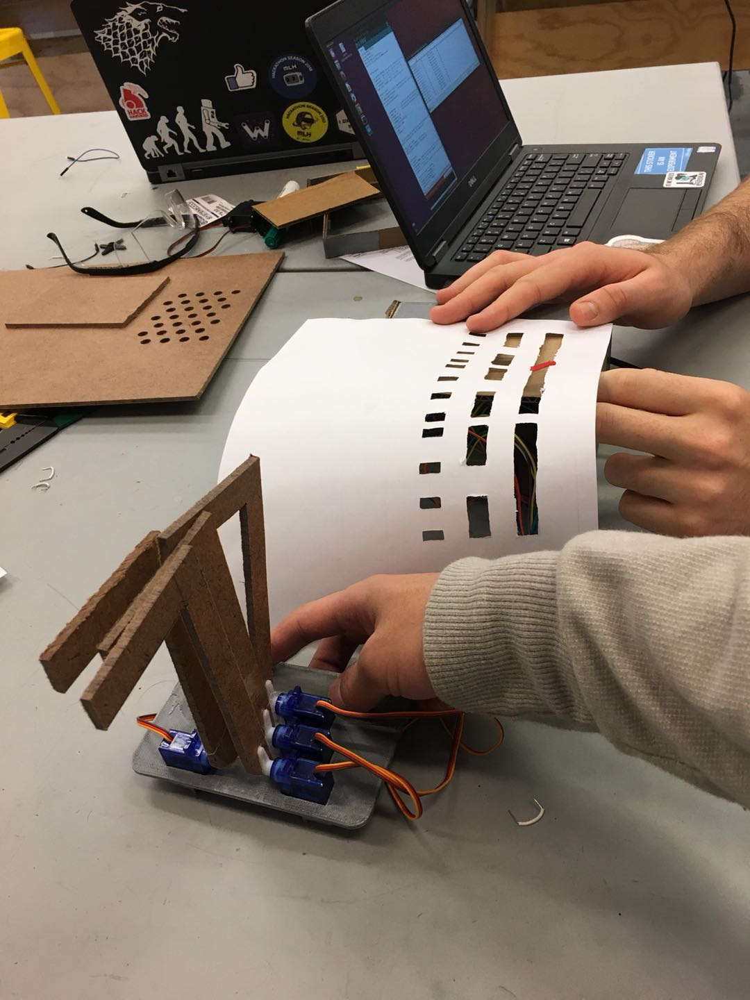

|
Text Here
Name - Month 00, 2017 |
|
Today I worked on the website. I found a good template that we all decided looked nice and would be functional. We worked to fill out some of the basic information and structure of the website.
Chris Aring - Oct 24, 2017 |
|
The first sprint is finished today! We finished building a proof of our idea and it worked! The infrared sensors had big margins of error but they showed the function of our MVP. To read black and white accurately we probably need better infrared sensors.
Yichen Jiang - Oct 27, 2017 |
|
I did a ton of soldering today. And now all the circuits for our 12 new infrared sensors were carefully organized on a single protoboard. The new sensors have higher sensitivity and can distinguish black from white. With the protoboard we should be able to better organize our electrical components and reduce the size of the enclosure box.
Yichen Jiang - Nov 8, 2017 |
|
Finally, end of the second sprint! Exciting news is that we have got all our infrared sensors mounted and functioning. We also managed to supply power to our 12 servos. I was having trouble controling the stepper motor earlier today. It turned out that Arduino motor shield wasn't enough to control the it. Our dear ninja Trent lent us a motor driver that could supply the necessary voltage and current. Then the motor moved! And our next step with that is to build a robost scrolling mechanism that can feed the paper continuously.
Yichen Jiang - Nov 10, 2017 |
|
I did a lot more work on the midi parser. It now is able to parse basic information like tempo, notes, note timings, and other information that we will need eventiually. I found that midi files use variable length values for the time between events so I have to work to create a method to get the right values.
Chris Aring - Nov 4, 2017 |
I figured out how to handle the variable length values and the parser is now able to detect every note and each note's start and end time. I now have to create a method of taking this information and printing it on a sheet as a physical note.
Chris Aring - Nov 9, 2017 |
As I've been cleaning up the first pass code and adding debugging tests, I've been thinking more about the multiple octaves/Arduinos problem. Possibly a CAN bus could work? Or if we wanted to work in individual octaves, a master/slave configuration could also pass and have a single configuration for each octave. That would keep it simple, although we may need a large number of arduinos. We also need to power everything; I'll need to start thinking about that soon.
Nick Sherman - Oct 25, 2017 |
Because our project could include many octaves, I started writing code that could be scaled for the number of octaves we have. I need to spend more time thinking about the best way to handle it, because I only have a fairly simple system that each Arduino Uno takes in 6 IR sensors data and outputs to 6 servos. Maybe I could do some communication so we have one Arduino reading everything in and the other moving the servos? Will get back to this.
Nick Sherman - Oct 20, 2017 |
|
Worked on the stepper motor. The motor currently only turns in small sections with pauses in the middle.
Raymundo Camacho - Nov 7, 2017 |
 Text Here
Text Here
Name - Month 00, 2017 |
| 
This is our project from the first sprint! Finger tips didn't operate as we desired and we need to figure out if the servos could provide enough torque for the "finger" to press down piano keys. Also the infrared sensors need more calibration to be able to identify black from white.
Yichen Jiang - Oct 26, 2017 |
For this sprint, I measured the distance between the first six notes on a piano, and created a CAD that held the Servos with the correct horizontal offset. We attached hardboard L shaped arms to represent the fingers that play the Piano.
Kian Raissian - Oct 27, 2017 |
After holding it up to a Piano, I realized the spacing between the Servos didn't exactly line up to a piano, so I respaced them to be correct.
Kian Raissian - Oct 31, 2017 |
I'm working on creating a very simple box to hold the IR sensors on the back, the wires inside, and the fingers sticking out the front of the box. I learned about a super secure type of box joint using a 1 inch 6 screw and square nut. With this configuration, I also decided that having the Servos vertically stacked is a better idea.
Kian Raissian - Nov 3, 2017 |
Sprint 2 has arrived! The box with the IR sensors and the fingers looked almost like a creepy hand, so some redesign will have to be done. We are still not putting the box in front of a piano because the we didn't have the chance to vertically secure the Servo plates. We are confident that the servos will have enough torque to press down the keys of an unweighted keyboard.
Kian Raissian - Nov 10, 2017 |
New developments, it looks like using arms of any length, we will not have enough torque to push down a piano key. I think it's time to pivot to having each of the servo rotate to create a linear motion downward using a rack and pinion.
Kian Raissian - Nov 10, 2017 |
So after some experimentation with rack and pinion configuration and some research on other devices that play pianos, I'm thinking that solenoids would be an ideal solution because we would not need to make any rack and pinion configuration and there is no torque, only downward force. Time to spec some solenoids
Kian Raissian - Nov 13, 2017 |
It's Thanksgiving Break, so I have a little more time to work on the project and spec solenoids. Luckily, I found a cheap one that has the correct travel distance and Voltage/Current rating, while still being not exorbitant in price. I'm ordering 24! I also spent a couple hours completely redesigning the CAD that integrated the scroller and the solenoids with the correct spacing.
Kian Raissian - Nov 13, 2017 |
The last Sprint! We had to integrate last night and I slept for 30 minutes in the hallway. Everything works, but not perfectly calibrated. IR sensors still need to be tuned, and the scroller isn't scrolling at a constant rate. The body also needs an aesthetic redesign.
Kian Raissian - Dec 1, 2017 |
We have a new design in CAD! We had some problems with how vertically offset the solenoid bars were, so that needs to be fixed.
Kian Raissian - Dec 5, 2017 |
Everything is mechanically finished! We have mounts for the protoboard, Arduino, Breadboards, IR sensors, and solenoids. We decided to add an aesthetic touch to our sides and Laser Raster a hand that looks like it is playing the piano. Very excited to integrate for demo day! Alot calibration and assembly
Kian Raissian - Nov 13, 2017 |